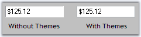
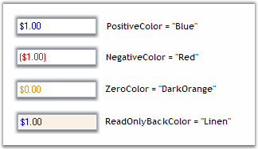

CurrencyTextBox control can be themed by setting ThemesEnabled to true.
|
CurrencyTextBox Property |
Description |
|
ThemesEnabled |
Specifies whether the CurrencyTextBox control uses XP themes, when BorderStyle is set to Fixed3D. |
|
[C#]
this.currencyTextBox1.ThemesEnabled = true; |
|
[VB.NET]
Me.currencyTextBox1.ThemesEnabled = True |

Figure 512: BorderStyle = "Fixed3D"; ThemesEnabled = True / False
The below properties describes various properties available to set border for the CurrencyTextBox control.
|
CurrencyTextBox Properties |
Description |
|
BorderStyle |
Sets the style of the border. The options includes:
FixedSingle, Fixed3D and None (Default). |
|
Border3DStyle |
Sets 3D border style of the CurrencyTextBox when the BorderStyle is in Fixed3D. The options includes:
Raised, RaisedOuter, RaisedInner, Sunken (default), SunkenOuter, SunkenInner, Etched, Bump, Adjust and Flat. |
|
BorderSides |
Specifies the border sides. The options includes
Left, Top, Right, Bottom, Middle and All (default). |
|
BorderColor |
Specifies the color of the border when BorderStyle is FixedSingle. |
|
[C#]
this.currencyTextBox1.BorderStyle = System.Windows.Forms.BorderStyle.FixedSingle; this.currencyTextBox1.Border3DStyle = System.Windows.Forms.Border3DStyle.Flat; this.currencyTextBox1.BorderColor = System.Drawing.Color.Magenta; this.currencyTextBox1.BorderSides = System.Windows.Forms.Border3DSide.All; |
|
[VB.NET]
Me.currencyTextBox1.BorderStyle = System.Windows.Forms.BorderStyle.FixedSingle Me.currencyTextBox1.Border3DStyle = System.Windows.Forms.Border3DStyle.Flat Me.currencyTextBox1.BorderColor = System.Drawing.Color.Magenta Me.currencyTextBox1.BorderSides = System.Windows.Forms.Border3DSide.All |
Figure 513: BorderStyle = "FixedSingle"; Border3DStyle = "Flat"; BorderColor = "Magenta"
We can set different colors for the different set of currency values i.e, Colors can be set for positive currency values, negative currency values and zero values by using the below properties. We can draw the background of Currency TextBox with colors when it is in read only mode by ReadOnlyBackColor.
|
CurrencyTextBox Properties |
Description |
|
PositiveColor |
Specifies Forecolor when the current value is positive. |
|
NegativeColor |
Specifies Forecolor when the current value is negative. |
|
ReadOnlyBackColor |
Specifies the color to be used for back color when the control is read only. Set ReadOnly to 'true'. |
|
ZeroColor |
Specifies Forecolor when the current value is Zero. |
|
[C#]
this.currencyTextBox1.PositiveColor = System.Drawing.Color.Blue; this.currencyTextBox1.NegativeColor = System.Drawing.Color.Red; this.currencyTextBox1.ReadOnlyBackColor = System.Drawing.Color.Linen; this.currencyTextBox1.ZeroColor = System.Drawing.Color.DarkOrange; |
|
[VB.NET]
Me.currencyTextBox1.PositiveColor = System.Drawing.Color.Blue Me.currencyTextBox1.NegativeColor = System.Drawing.Color.Red Me.currencyTextBox1.ReadOnlyBackColor = System.Drawing.Color.Linen Me.currencyTextBox1.ZeroColor = System.Drawing.Color.DarkOrange |

Figure 514: Color Settings for CurrencyTextBox Control